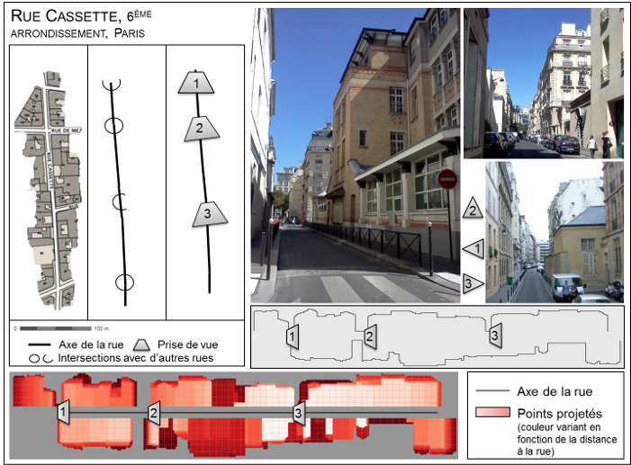

Modélisation et exploitation de l’information géographique 3D pour analyser les territoires
- Conception d’une plateforme SIG 3D
- Analyse de la morphologie et de la visibilité en 3D
- Étude de l'influence de la qualité des données 3D
Conception d'une plateforme SIG3D : module 3D de GeOxygene
- Visualisation 3D
- Méthodes d'analyse spatiale : Somme de Minkowski 3D, algorithm de ray tracing, intersection 2D/3D
- Interopérabilité avec d’autres bibliothèques de traitement 3D : tetgen (tetraedrisation 3D), j3dboolop (opérateurs booléens 3D)
- Chargement et export de données 3D : format CityGML (avec citygml4j) et ShapeFile, connexion à base de donnes PostGIS
- Transformation de données : extrusion, plaquage sur MNT
Sélection de publications
- Brasebin, M (2009) GeOxygene: An Open 3D Framework for the Development of Geographic Applications, 12th International Conference on Geographic Information Science (AGILE)
- Grosso, E., J. Perret and M. Brasebin (2012) GEOXYGENE : une plate-forme interopérable pour le développement d'applications géographiques, Développements logiciels en géomatique : innovations et mutualisation, chap. 3, Bénédicte Bucher & Florence Le Ber Ed., Hermès - Lavoisier
Différentes visualisations issues de GeOxygene 3D (Brasebin M , 2009)
Analyse de la morphologie et de la visibilité en 3D
Sélection de publications
- Fund, M. (2012) Exploitabilité des bases de données 3D pour le calcul d'indicateurs urbains 3D, Rapport de stage, Encadrement Mickaël Brasebin et Julien Perret, M2 Information Géographique & M2 Génie urbain, Université Paris Est MLV, ENSG, sep 2012
- Brasebin, M., J. Perret, S. Mustière and C. Weber (2012) Measuring the impact of 3D data geometric modeling on spatial analysis : illustration with Skyview factor, 3u3d2012: Usage, Usability, and Utility of 3D City models
 Analyse du rythme des façades le long de la rue Cassette (Fund M., 2012)
Analyse de la morphologie et de la visibilité en 3D
Sélection de publications
- Brasebin, M., J. Perret, S. Mustière and C. Weber (2012) Measuring the impact of 3D data geometric modeling on spatial analysis : illustration with Skyview factor, 3u3d2012: Usage, Usability, and Utility of 3D City models
- Brasebin, M. (2014) Apport des données géographiques 3D fines pour l’évaluation de l’influence de règles d’urbanisme, Atelier Sageo 2014 AP 3D et usages
 Rythme des façades mesurés à partir de deux jeux de données avec des granularités différentes (Fund M., 2012)
Rythme des façades mesurés à partir de deux jeux de données avec des granularités différentes (Fund M., 2012)